Configure Role-Based Access Control (RBAC)
Role-Based Access Control (RBAC) enables fine-grained permission management in Red Hat Developer Hub, allowing you to control user access to specific features, views, and catalog entities based on their roles, group, and other properties. This integration provides administrators with the ability to enforce security policies and ensure users only access resources appropriate for their roles.
RBAC in Red Hat Developer Hub enables:
-
Control access to specific features and functionality, including plugin-provided capabilities
-
Restrict access to particular views and interfaces within the developer portal
-
Limit visibility to subsets of entities in the Software Catalog
-
Define granular permissions for different user groups and individual users
Configuring RBAC requires:
-
Enabling the permission plugin in your Red Hat Developer Hub configuration
-
Designating RBAC administrators with policy management privileges
-
Creating and configuring role-based policies for users and groups
-
Testing and validating the policies
Understanding RBAC Policies
RBAC rules in Red Hat Developer Hub are applied to both individual Users and Groups. The system follows a deny by default security policy, meaning that once RBAC is enabled, users will have no access to any resources unless explicitly granted through RBAC policies.
|
Enabling RBAC will immediately restrict feature access for all users except designated administrators. In production scenarios, make sure to define your policies ahead of time using the declarative option or at a time that minimizes end-user impact. |
RBAC policies can be managed in two ways:
-
Through the UI: Designated administrators can create and manage policies using the Administration interface
-
Through configuration files: Policies can be defined using Casbin rules in CSV format and mounted as volumes
This exercise will initially utilize the UI-based approach so you can become familiar with RBAC concepts, then the configuration file approach will be used.
Enable and Configure the Permission Plugin
The permission plugin provides the RBAC functionality for Red Hat Developer Hub. You’ll need to add this plugin to your dynamic plugin configuration.
Add the RBAC Dynamic Plugin
-
Log in to the {openshift_console_url}[OpenShift Web Console^] using the following credentials:
-
Username:
{openshift_admin_user} -
Password:
{openshift_admin_password}
-
-
Navigate to Workloads > ConfigMaps and select the dynamic-plugins-rhdh ConfigMap (make sure the project is set to setup-rhdh).
-
Edit the ConfigMap to include the RBAC plugin in the
pluginsentry.- package: ./dynamic-plugins/dist/backstage-community-plugin-rbac disabled: false -
Click Save.
Configure the RBAC Plugin
To manage RBAC policies though the Red Hat Developer Hub UI, you must designate specific users as RBAC administrators. These users will have permission to create, modify, and delete access policies through the Administration > RBAC view in the UI.
-
In your Red Hat Developer Hub rhdh-config ConfigMap, add the permission plugin settings to the app-config.yaml at the top level (aligned with the existing top-level keys like
apporintegrations).permission: enabled: true rbac: admin: users: - name: user:default/adminIn this exercise you’re using
user:default/adminas the administrative user in the lab environment. Replace this with a valid user entity reference in real-world scenarios - you can view valid user entities in the Red Hat Developer Hub Software Catalog by filtering by Kind: User. -
Save the configuration changes and wait for the Red Hat Developer Hub instance to restart and apply the new configuration.
Verify RBAC is Enabled
Once RBAC is enabled, you’ll verify that the deny-by-default policy is working correctly and that administrator access is properly configured.
Verify Initial Access Restrictions
-
Navigate to your Red Hat Developer Hub instance and log as user1.
-
Observe that access is now restricted:
-
No entities are visible in the Software Catalog (click Catalog on the left)
-
Self-service templates are not accessible (click the
+button at the top) -
No APIs are available (click APIs on the left)
-
This confirms that the deny-by-default policy is in effect. You can see that no entities are visible to user1 in the following screenshot.
Confirm Administrator Access
-
Log out from Red Hat Developer Hub using the dropdown in the top-right corner.
-
Log in again, but as:
-
Username:
{openshift_admin_user} -
Password:
{openshift_admin_password}
-
-
Select Catalog from the side menu.
-
This admin user should have full access to entities in the Software Catalog, as shown.
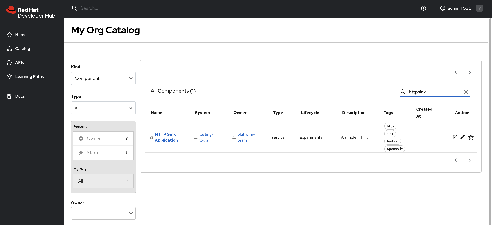 -
Next, select Administration > RBAC item in the side menu - the RBAC UI should be displayed.
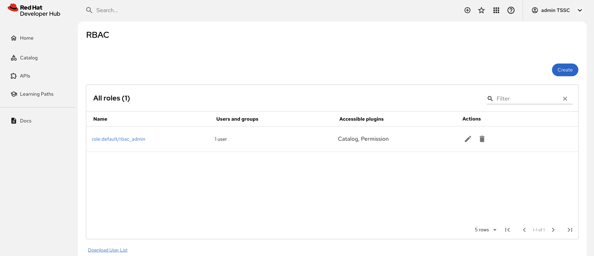
Now that you’ve confirmed RBAC is enabled, and that the admin user can access the RBAC administration view, it’s time to manage RBAC policies.
Create RBAC Policies
With RBAC enabled and administrator access confirmed, you can now create policies to grant appropriate access to users and groups.
Access the RBAC Management Interface
-
While logged in as an administrator, navigate to Administration > RBAC in the Red Hat Developer Hub interface.
-
This interface displays existing policies and provides options to create, modify, and delete access policies.
-
Click the pre-existing rbac_admin policy and confirm that your admin user is a member.
Create a Group-Based Access Policy
You’ll create a policy that grants basic catalog viewing permissions to users in the tssc group. Recall that the Group entities in your Software Catalog have been synchronized from Keycloak.
-
Return to the Administration > RBAC screen.
-
Click Create to start creating a new policy.
-
Configure the policy with the following settings:
-
Policy Name:
tssc-catalog-view -
Description:
Grants basic catalog viewing permissions to TSSC group members -
Owner: Empty
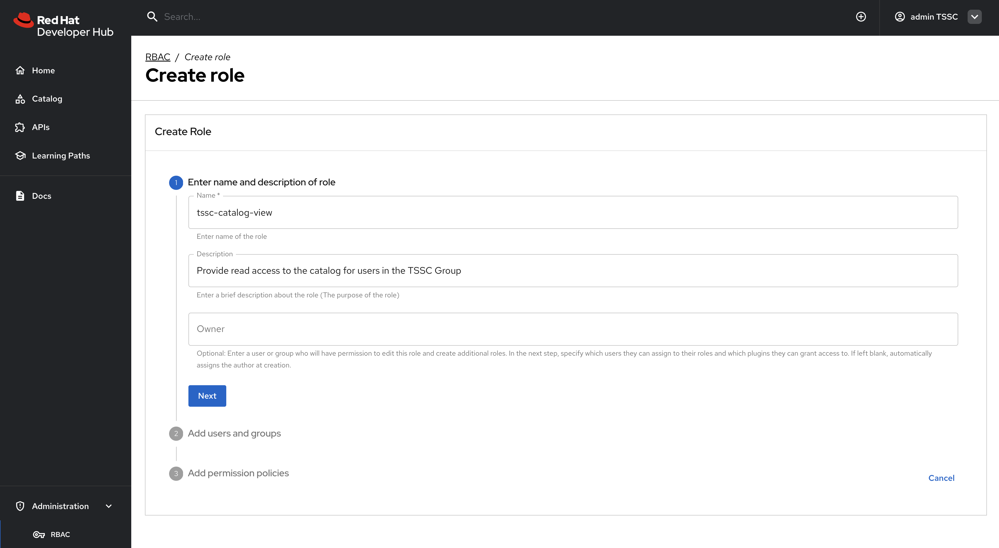You can verify that the
tsscgroup exists by navigating to the Software Catalog and filtering by Kind: Group. Group entity references follow the formatgroup:[namespace]/[group-name], e.ggroup:default/tssc. The tssc group has one member: user1.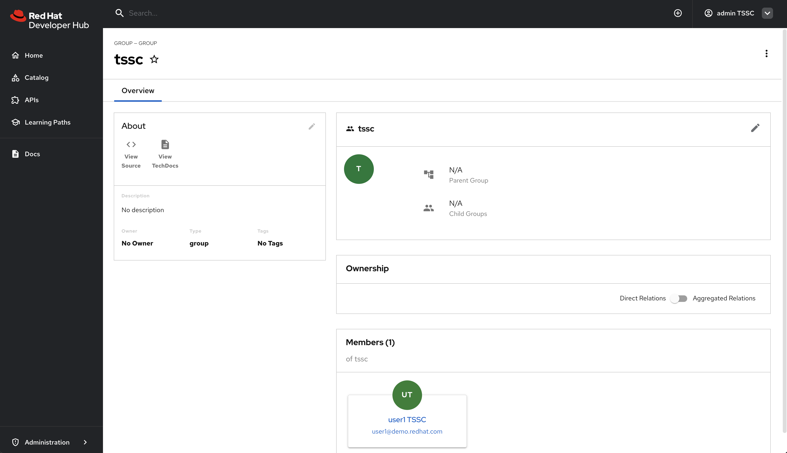
-
-
Click Next.
-
Select the
tsscgroup to apply this policy to.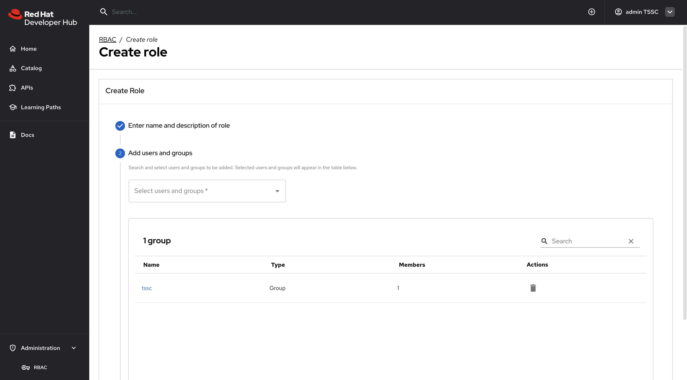 -
Click Next.
Configure Policy Permissions
-
In the Add permission policies, select the Catalog plugin.
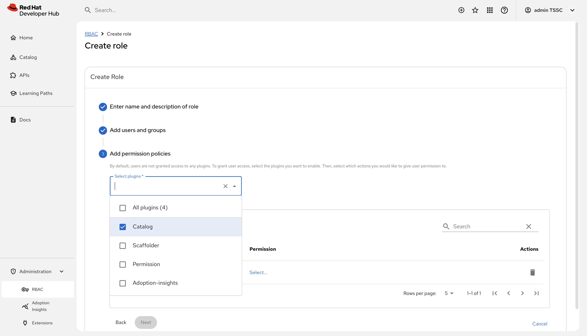 -
Expand
-
catalog.entity.read- Allows reading catalog entities -
catalog.entity.refresh- Allows refreshing entity data -
catalog.location.read- Allows reading location information
-
-
Confirm that your selections match the following screenshot.
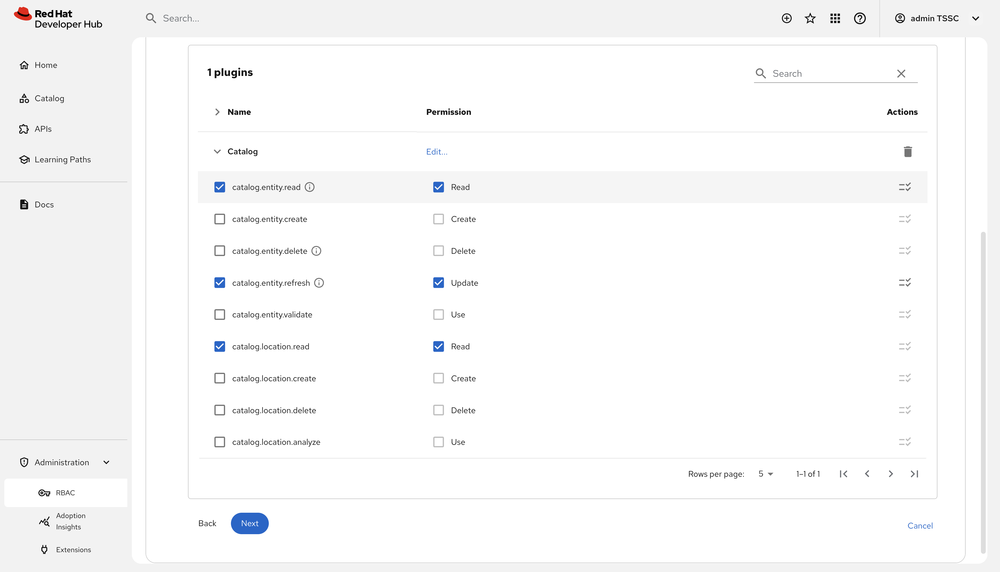 -
Click Next to review your new policy.
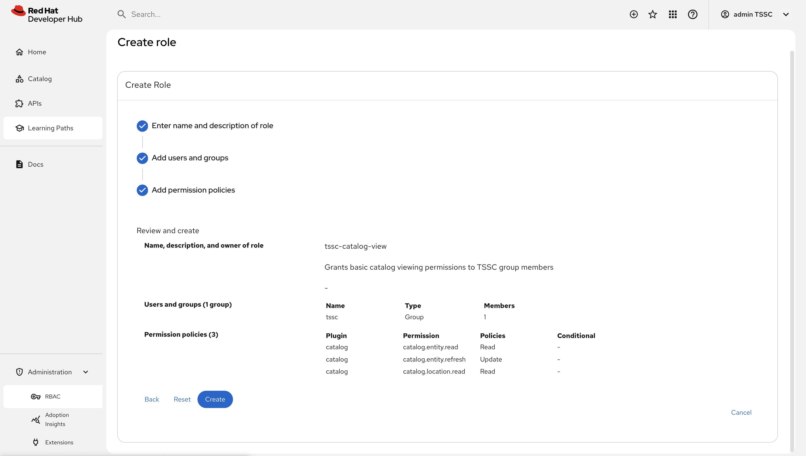 -
Click Create to save the policy.
Nice work! You created your first RBAC policy - time to validate it’s working as intended.
Validate Policy Implementation
Test the newly created policy to ensure it grants the expected access while maintaining appropriate restrictions.
Test Group Member Access
-
Log out from Red Hat Developer Hub.
-
Log in as a user who is a non-privileged user that’s member of the
tsscgroup ({rhdh_user}/{rhdh_user_password}). -
Visit the Software Catalog to confirm that entities are visible.
-
Select the HTTP Sink Application to confirm {rhdh_user} can view it.
-
Navigate to the CD tab - you should notice a permission error.
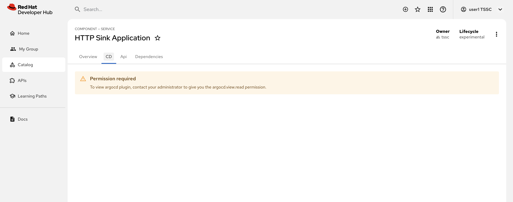 -
Additionally, click the three dots in the top-right to confirm you cannot click the Unregister entity action.
You just witnessed RBAC in action. Access to Argo CD information is restricted separate to the entities themselves, enabling fine-grained access control.
-
The user cannot access the CD tab (this requires separate continuous delivery permissions)
-
The user cannot unregister or delete entities
-
The user cannot import new entities or create new locations
-
Administrative functions remain inaccessible
|
Different Red Hat Developer Hub features and plugins require specific permissions. You’ll need to create additional policies to grant access to features like continuous delivery views, template creation, or entity management as needed for your organization. |
Using Casbin Files for RBAC Management
Scaling permissions management, ensuring an audit trail for changes, and using a GitOps-based deployment approach are all good reasons to consider using a configuration as code approach for managing RBAC policies. Red Hat Developer Hub supports a policy-as-code approach for RBAC via Casbin files.
In this section you’ll learn how to define policies using Casbin and load them into Red Hat Developer Hub.
Create a Casbin Rules ConfigMap
-
Login to the OpenShift Web Console.
-
Ensure the setup-rhdh is selected in the project selector.
-
Expand Workloads > ConfigMaps and click Create ConfigMap.
-
Select the Form view.
-
Set the Name to
rbac-policies. -
Set the Key to
rbac-policies.csv. -
Enter the following value in the text field:
p, role:default/location_read, catalog.entity.read, read, allow p, role:default/location_read, catalog.location.read, read, allow p, role:default/platformengineer, catalog.entity.create, create, allow p, role:default/platformengineer, catalog.entity.refresh, update, allow p, role:default/platformengineer, catalog.entity.delete, delete, allow p, role:default/platformengineer, catalog.location.create, create, allow p, role:default/platformengineer, catalog.location.delete, delete, allow p, role:default/scaffolder_execute, scaffolder.action.execute, use, allow p, role:default/scaffolder_execute, scaffolder.template.parameter.read, read, allow p, role:default/scaffolder_execute, scaffolder.template.step.read, read, allow p, role:default/scaffolder_execute, scaffolder.task.create, create, allow p, role:default/scaffolder_execute, scaffolder.task.cancel, use, allow p, role:default/scaffolder_execute, scaffolder.task.read, read, allow p, role:default/scaffolder_execute, catalog.location.create, create, allow p, role:default/plugins, topology.view.read, read, allow p, role:default/plugins, tekton.view.read, read, allow p, role:default/plugins, argocd.view.read, read, allow p, role:default/plugins, kubernetes.proxy, use, allow g, user:default/admin, role:default/location_read g, user:default/admin, role:default/platformengineer g, user:default/admin, role:default/scaffolder_execute g, user:default/admin, role:default/plugins g, group:default/tssc, role:default/location_read g, group:default/tssc, role:default/scaffolder_execute g, group:default/tssc, role:default/plugins -
Scroll down and click Create
You created a ConfigMap named rbac-policies that contains a file named rbac-policies.csv. The Casbin rules create numerous policies that apply to specific roles. For example, the following block creates a role named location_read that enables assigned groups and users to read general catalog entities and locations entities:
p, role:default/location_read, catalog.entity.read, read, allow
p, role:default/location_read, catalog.location.read, read, allowThis role is later assigned to groups (the tssc group) and users (the admin user):
g, user:default/admin, role:default/location_read
g, group:default/tssc, role:default/location_readUpdate Red Hat Developer Hub RBAC Configurations
To actually use your new RBAC policies you’ll need to load the ConfigMap into the Red Hat Developer Hub pod, and update the permissions block in the app-config.yaml to use it.
-
Navigate to Workloads > ConfigMaps in the setup-rhdh project.
-
Select the rhdh-config ConfigMap.
-
Choose Actions > Edit ConfigMap and select the YAML editor.
-
Update the
permissionssection to include apolicies-csv-filekey that reads the loadedrbac-policies.csv, and click Save.permission: enabled: true rbac: policies-csv-file: /opt/app-root/src/rbac-policies.csv admin: users: - name: user:default/admin
Next, update the Backstage CR to load the new ConfigMap:
-
Select Home > Search in the OpenShift Web Console.
-
Ensure the setup-rhdh is selected in the project selector.
-
Type
backin the Resources box to find theBackstageCR, and click it to select, and close the drop-down using thexbutton in the top-right. -
Select the rhdh entry in the Backstages list.
-
Switch to the YAML view and add the rbac-policies ConfigMap to the
spec.application.extraFilessection.application: extraFiles: mountPath: /opt/app-root/src configMaps: - name: rbac-policies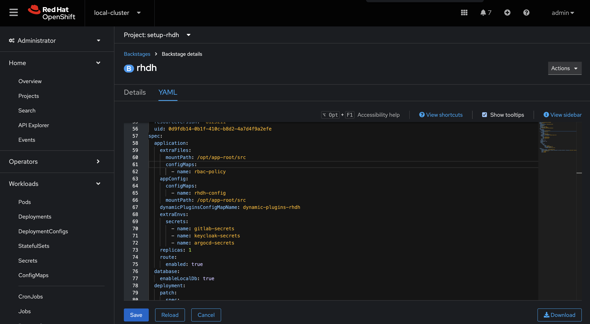 -
Click Save.
-
Navigate to Workloads > Pods in the OpenShift Web Console and wait for the new Red Hat Developer Hub pod to report readiness.
Verify the Casbin-based Policies
-
Login to Red Hat Developer Hub as the
{openshift_admin_user}user using the passowrd{openshift_admin_password}. -
Visit the Administration > RBAC screen.
-
Your new roles should be listed, and reflect the values in the ConfigMap.
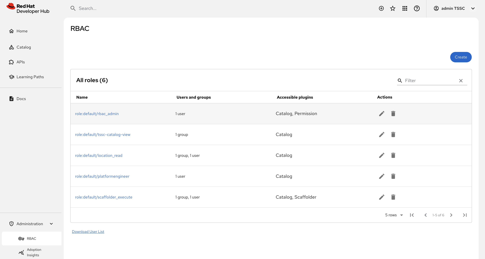 -
Click on the
location_readpolicy and confirm that the Modified by column states that it’s managed by the policy file.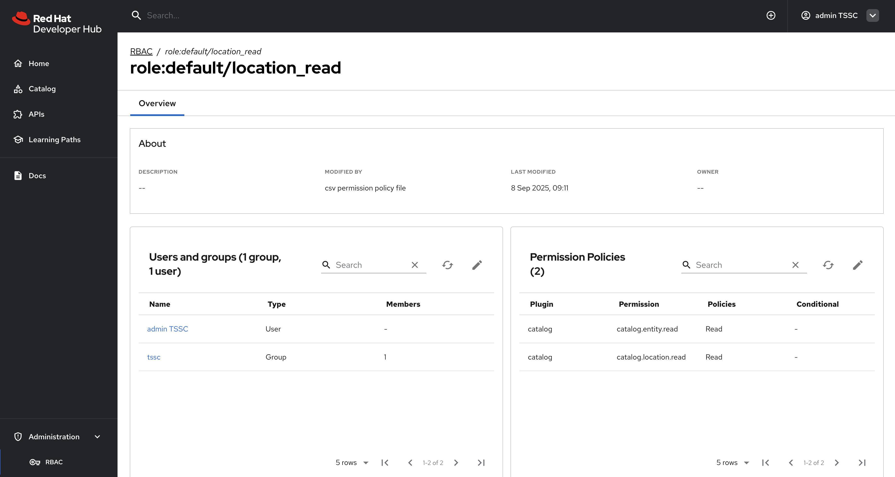